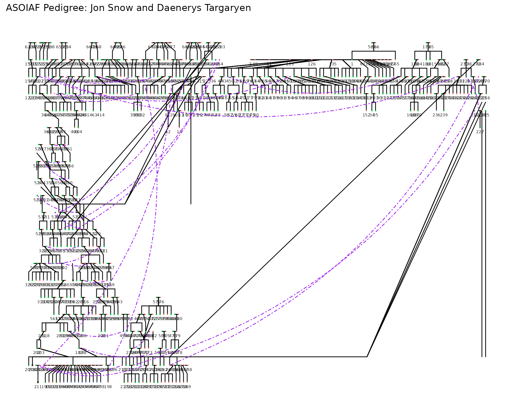

Introduction
Just how closely related are Jon Snow and Daenerys Targaryen? According to the lore of A Song of Ice and Fire, Daenerys is Jon’s paternal aunt. This would suggest a theoretical genetic relatedness of 0.25, assuming a simple pedigree and no inbreeding. But with tangled ancestries and potentially missing information, how confident can we be in that estimate?
In this vignette, we use the BGmisc package to
reconstruct the ASOIAF pedigree, handle incomplete parentage
data, and compute additive genetic and common nuclear relatedness. We’ll
focus on Jon and Daenerys as a case study, but the methods generalize to
any characters in the provided dataset.
Load Packages and Data
We begin by loading the required libraries and examining the
structure of the built-in ASOIAF pedigree.
The ASOIAF dataset includes character IDs, names, family identifiers, and parent identifiers for a subset of characters drawn from the A Song of Ice and Fire canon.
head(ASOIAF)## id famID momID dadID name sex
## 1 1 1 NA NA Walder Frey M
## 2 2 1 NA NA Perra Royce F
## 3 3 1 2 1 Stevron Frey M
## 4 4 1 2 1 Emmon Frey M
## 5 5 1 2 1 Aenys Frey M
## 6 6 1 NA NA Corenna Swann FPrepare and Validate Sex Codes
Many pedigree-based algorithms rely on biological sex for downstream
calculationss and visualization. We use checkSex() to
inspect the sex variable, repairing inconsistencies
programmatically.
df_got <- checkSex(ASOIAF,
code_male = 1,
code_female = 0,
verbose = FALSE, repair = TRUE
)Compute Relatedness Matrices
With validated pedigree data, we can now compute two distinct relationship matrices:
Additive genetic relatedness (add): Proportion of shared additive genetic variance between individuals.
Common nuclear relatedness (cn): Indicates shared full-sibling (nuclear family) environments.
These are derived using ped2add() and ped2cn(), respectively. Both functions rely on internal graph traversal and adjacency structures. In this case:
We specify isChild_method = “partialparent” to allow inclusion of dyads where one parent is unknown.
We choose adjacency_method = “direct” for the additive matrix to optimize for computational speed.
For the common nuclear matrix, we use adjacency_method = “indexed”, which is slower but necessary for resolving sibling-group structures.
We set
sparse = FALSEto return full (dense) matrices rather than compressed sparse formats.
add <- ped2com(df_got,
isChild_method = "partialparent",
component = "additive",
adjacency_method = "direct",
sparse = TRUE
)
mt <- ped2com(df_got,
isChild_method = "partialparent",
component = "mitochondrial",
adjacency_method = "direct",
sparse = TRUE
)
cn <- ped2cn(df_got,
isChild_method = "partialparent",
adjacency_method = "indexed",
sparse = TRUE
)Convert to Pairwise Format
For interpretability, we convert these square matrices into
long-format tables using com2links(). This function returns
a dataframe where each row represents a unique pair of individuals,
including their additive and common nuclear coefficients.
df_links <- com2links(
writetodisk = FALSE,
ad_ped_matrix = add, cn_ped_matrix = cn, mit_ped_matrix = mt,
drop_upper_triangular = TRUE
) # %>%
# filter(ID1 != ID2)The function can return the entire matrix or just the lower
triangular part, which is often sufficient for our purposes. Setting
drop_upper_triangular = TRUE ensures we only retain one
entry per dyad, since the matrices are symmetric. We also keep the data
in memory by setting writetodisk = FALSE.
Locate Jon and Daenerys
We next identify the rows in the pairwise relatedness table that correspond to Jon Snow and Daenerys Targaryen. First, we retrieve their individual IDs:
# Find the IDs of Jon Snow and Daenerys Targaryen
jon_id <- df_got %>%
filter(name == "Jon Snow") %>%
pull(ID)
dany_id <- df_got %>%
filter(name == "Daenerys Targaryen") %>%
pull(ID)Then we isolate their dyad:
jon_dany_row <- df_links %>%
filter(ID1 == jon_id | ID2 == jon_id) %>%
filter(ID1 %in% dany_id | ID2 %in% dany_id)
jon_dany_row## ID1 ID2 addRel mitRel cnuRel
## 1 206 211 0.31274414 0 0
## 2 211 304 0.01953125 0 0This table contains the additive and nuclear relatedness estimates for Jon and Daenerys. If the pedigree reflects their canonical aunt-nephew relationship and is free from inbreeding, we’d expect to see an additive coefficient close to 0.25. However, the value is 0.3127441, indicating a more complex relationship.
Plotting the Pedigree with Incomplete Parental Information
Many real-world and fictional pedigrees contain individuals with
unknown or partially known parentage. In such cases, plotting tools
typically fail unless these gaps are handled. We use
checkParentIDs() to:
Identify individuals with one known parent and one missing
Create “phantom” placeholders for the missing parent
-Optionally repair and harmonize parent fields
To facilitate plotting, we check for individuals with one known parent but a missing other. For those cases, we assign a placeholder ID to the missing parent.
df_repaired <- checkParentIDs(df_got,
addphantoms = TRUE,
repair = TRUE,
parentswithoutrow = FALSE,
repairsex = FALSE
) %>% mutate(
famID = 1,
affected = case_when(
ID %in% c(jon_id, dany_id, "365") ~ 1,
TRUE ~ 0
)
)## REPAIR IN EARLY ALPHAThis code creates new IDs for individuals with one known parent and a
missing other. It checks if either momID or
dadID is missing, and if so, it assigns a new ID based on
the row number. This allows us to visualize the pedigree even when some
parental information is incomplete.
Visualize the Pedigree
Plotting the Pedigree with
kinship2::plot.pedigree()
We can now visualize the repaired pedigree using the
plotPedigree() function. This function generates a plot of
the pedigree, with individuals colored based on their affected status.
In this case, we highlight Jon and Daenerys as “affected” individuals.
Otherwise they would be difficult to distinguish from the rest of the
pedigree.
plotPedigree(df_repaired, affected = df_repaired$affected, verbose = FALSE)
## Did not plot the following people: 85 88 125 142 228 229 258 259 274 275 305 336 357 381 388 405 409 418 420 424 428 451 487## named list()Visualize the Pedigree with ggPedigree()
Here is the same pedigree, but using ggPedigree() from
{ggpedigree}. This function provides a more flexible and customizable
way to visualize pedigrees, allowing for easy integration with other
ggplot2 functions.
library(ggpedigree)
plt <- ggPedigree(df_repaired,
status_col = "affected",
personID = "ID",
config = list(
status_unaffected_lab = 0,
sex_color = TRUE,
code_male = "M",
status_affected_lab = 1,
affected_shape = 4,
ped_width = 14,
include_tooltips = TRUE,
label_nudge_y = -.25,
include_labels = TRUE,
label_method = "geom_text",
segment_self_color = "purple",
tooltip_cols = c("name")
)
)
plt +
theme(legend.position = "none") +
labs(title = "ASOIAF Pedigree: Jon Snow and Daenerys Targaryen")